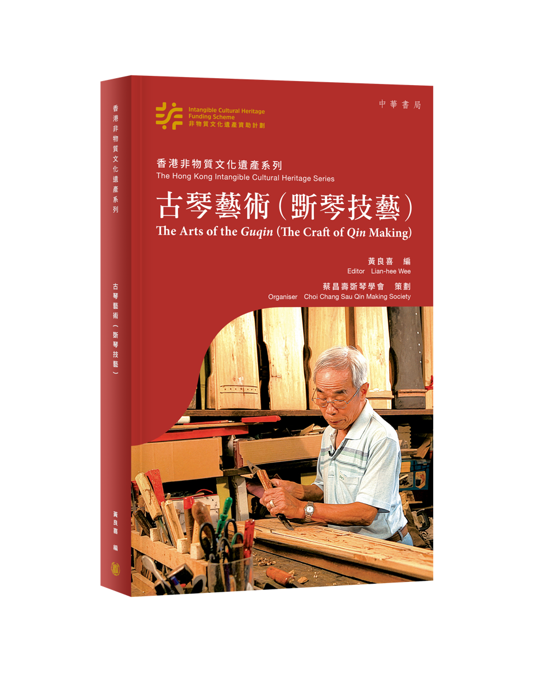

新 書 出 版
book launch

蔡昌壽斲琴學會新書出版：【香港非物質文化遺產系列 － 古琴藝術（斲琴技藝）】
由蔡昌壽斲琴學會籌劃，在非物質文化遺產資助計劃下推出的新書【香港非物質文化遺產系列 － 古琴藝術（斲琴技藝）】於2025年12月面世。
自古至今，選擇古琴作為樂器的人不多。但在今日香港，卻有超過六十位彈古琴的人是用自己親手造的古琴在家練琴。「斲琴」就是彈古琴的人親自造琴的音樂文化，已有最少一千八百年歷史。由於斲琴文化的珍貴，國務院於2014年以「古琴藝術（斲琴技藝）」之名，把香港的斲琴文化列入國家級非物質文化遺產代表性項目名錄。
「斲琴」這名字早見於東晉畫家顧愷之筆下的【斲琴圖】，讓我們知道「斲琴」自晉代至今其實一直未有改變。【斲琴圖】描繪了晉代士大夫坐在老虎皮上親自造琴，赤膊露肩滿身大汗卻樂在其中，不允許在旁書僮幫忙。可見，自古至今「斲琴」不單只是古琴的製作技藝，它更是一項為參與者帶來無窮樂趣的活動。琴人親自斲作的琴器無論聲音、形態、顏色、細節都是張張不同，各具個性，並背負作者的簽名，刻有自己的琴名，每張都是獨一無二的作品。
香港的斲琴文化始於浙派琴家徐文鏡（1895－1975）及其唯一斲琴徒兒蔡昌壽，又名劉昌壽 （1933 － 2025）。為傳承斲琴藝術，蔡昌壽（劉昌壽）自1993年開始擇彈琴人為徒，於2011年成立蔡昌壽斲琴學會，並於2018年獲國務院確認為國家級非物質文化遺產代表性傳承人。本書由蔡昌壽的徒兒撰寫，記錄了徐文鏡及蔡昌壽所傳的斲琴技藝與心得，及香港斲琴文化的歷史與發展；本書也是一份送給後世斲琴導師的授課手冊：未來的斲琴導師會從本書中找到蔡昌壽所傳的斲琴技藝要領，並能以本書作為起點，繼續加以註釋、修正、增訂，把經驗與發現寫下，把斲琴學問一代一代延續下去。
Choi Chang Sau Qin Making Society announces the release of its forthcoming book, The Hong Kong Intangible Cultural Heritage Series - The Arts of the Guqin (The Craft of Qin Making).
The Hong Kong Intangible Cultural Heritage Series — The Arts of the Guqin (The Craft of Qin Making) — produced by Choi Chang Sau Qin Making Society and sponsored by the Intangible Cultural Heritage Office of Hong Kong — was launched in December 2025.
While the qin, also commonlyknown as theguqin,has remained a niche instrument since ancient times, a unique community of over sixty musicians in Hong Kong continues to practice on instruments they crafted themselves. This tradition of players making their own instruments, known as zhuoqin, spans over 1,800 years. In recognition of this precious local culture, the State Council inscribed Hong Kong’s zhuoqin tradition to the national list of intangible cultural heritage in 2014, under the title "The Arts of the Guqin (Zhuoqin Techniques)."
The term zhuoqin traces its origins to Zhuoqin Tu (Painting of Making a Qin), a work by the Eastern Jin painter Gu Kaizhi. This historical record tells us that the fundamental practice of zhuoqin has remained remarkably consistent from the Jin dynasty to the present.
Zhuoqin Tu depicts a Jin-era scholar-official seated on a tiger skin, personally crafting a qin. Shown bare-chested and shoulders exposed, he is sweating profusely yet clearly delighting in the process, even refusing assistance from a nearby attendant. This portrayal highlights that zhuoqin has never been merely a technical craft; it is a source of profound enjoyment for its practitioners.
Hong Kong’s zhuoqin tradition traces its roots to the Zhejiang-school qin master Xu Wenjing (1895–1975) and his sole apprentice in instrument-making, Master Choi Chang Sau (also known as Lau Chang Sau, 1933–2025). Committed to preserving this ancient art, Master Choi began mentoring qin players as apprentices in 1993 and established the Choi Chang Sau Qin Making Society in 2011. In recognition of his mastery, he was named a representative bearer of the national intangible cultural heritage in 2018.
Written by Master Choi’s disciples, this book serves as both a historical record and a practical handbook. It documents:
Legacy Techniques: The specialized insights and zhuoqin know-how passed down from Xu Wenjing through Choi Chang Sau.
Cultural History: The development and evolution of Hong Kong’s unique zhuoqin culture.
Teaching Resources: Essential methods intended to guide future generations of qin-making instructors.
By recording their own experiences and discoveries within these pages, future teachers of the Hong Kong zhuoqin school can use this text as a foundation to annotate, refine, and expand the craft—ensuring that the knowledge of zhuoqin continues to thrive for generations to come.
中華書局網頁 Webpage of ChungHawBook Co.:https://www.chunghwabook.com.hk
主辦 • Presented by :

策劃 • Organised by:

資助 • Funded by: